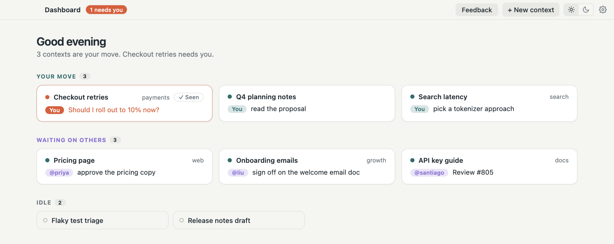
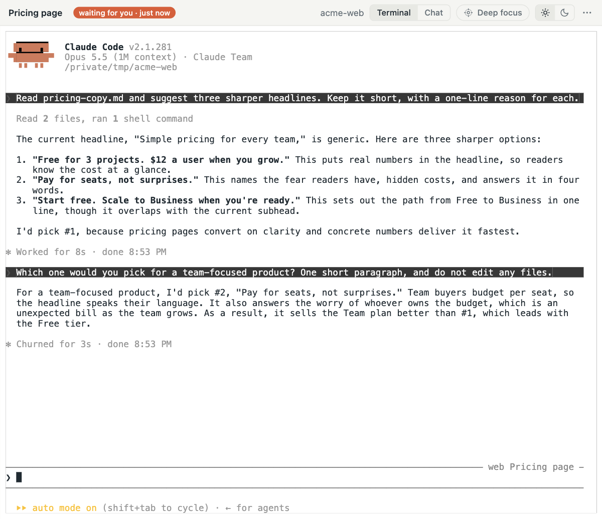
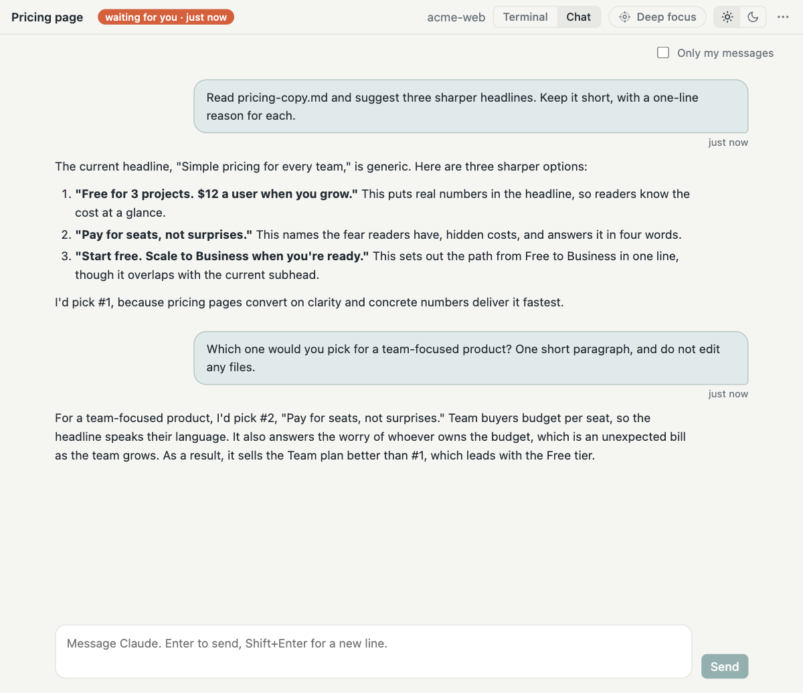
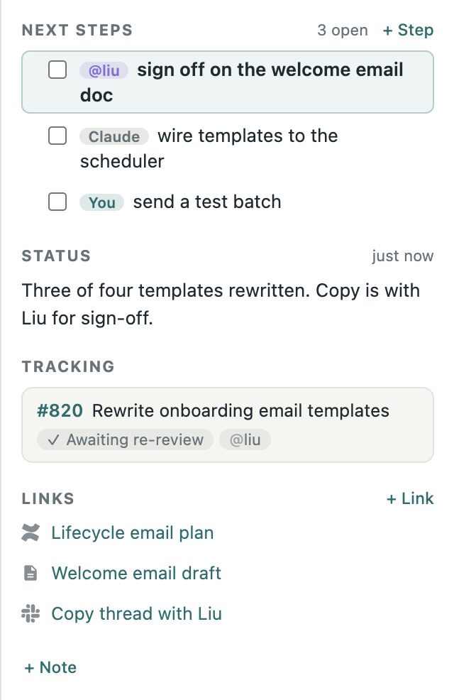
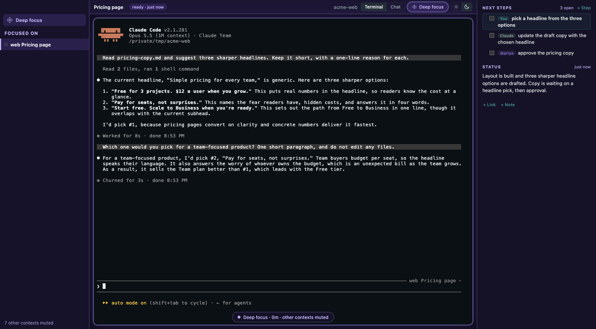

Only what needs you
You hear from Perch only when Claude, a reviewer, or CI is waiting on you.
A calm Mac home for your Claude Code work, with every session, PR, and link in one place. Perch stays quiet while you're in flow, and tells you when something needs you.

Runs the real Claude Code CLI with your own login.
PR reviews, CI, and who you’re waiting on, through your gh login.
Merge requests, approvals, and threads, through your glab login.
Ticket status and new comments, through Atlassian’s own sign-in.
Links come along too. When a thread, page, or doc comes up in your Claude conversation, Perch pins it with a readable title.


Chat with Claude, or switch to the real Claude Code terminal. Its status, next steps, PRs, links, and notes sit beside it.
Each piece of work keeps a short checklist, and every step has an owner: you, Claude, or a teammate. Claude writes a one-line status as it works, and each PR shows who you're waiting on.

You hear from Perch only when Claude, a reviewer, or CI is waiting on you.
Automatically detects linked PRs across repos and worktrees.
Quit or update Perch. Your Claude sessions keep running.
Mute every other context and stay with one. Leave when you choose to.

Contexts, notes, and status live in a local database. No account, and nothing about your work leaves your Mac.
No analytics or usage tracking. Crash reports are off unless you turn them on, and never include your prompts, terminal output, or code.
Perch never reads, stores, or sends your API keys or sign-in tokens. They stay in your macOS Keychain or your own environment variables.
GitHub, GitLab, and Jira go through your own gh, glab, and Atlassian logins, and Claude Code talks to Anthropic exactly as it does without Perch.
Sessions report to Perch over a local connection that never leaves your machine.
Every release is signed with an Apple Developer ID and checked by Apple’s notarization, including its malware scan.
GitHub, GitLab, Claude, Jira, and the other product names and logos shown are trademarks of their owners. Perch is an independent app, not affiliated with GitHub, GitLab, Anthropic, or Atlassian.
Requires the Claude Code CLI. The GitHub, GitLab, and Atlassian CLIs are optional, for PR, merge request, and ticket status.
Already using Claude Code? Pick the sessions you want and Perch resumes each one exactly where it left off.